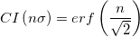

最終更新日:2015/02/04
信頼区間(CI)は、測定の際によく使用されるパラメータです。これは、測定値が区間[a,b]に近い範囲にあるという確率です。対称的なガウス分布では、重要は区間は標準偏差またはσです。区間1σ, 2σ, 3σ, nσに対応する確率は、Originの誤差関数erfを使用して計算できます。従って、

erf 関数の繰り返し評価は、以下の値と表を生成します。
| N | CI |
|---|---|
| 1 | 0.6826894850 |
| 2 | 0.9544997241 |
| 3 | 0.9973002038 |
| 4 | 0.9999366575 |
| 5 | 0.9999994267 |
| 6 | 0.9999999980 |
キーワード:Gaussian, 信頼区間